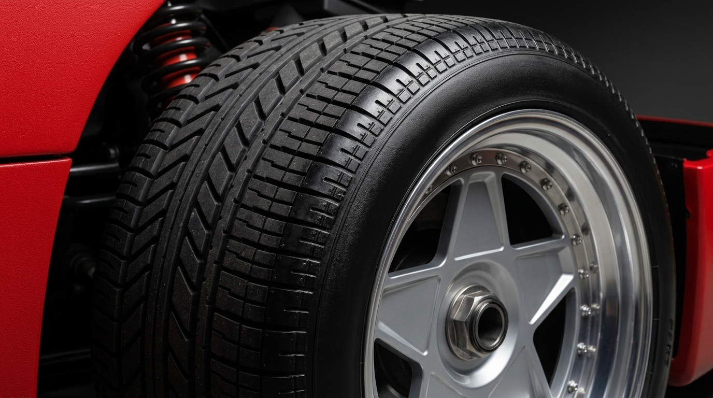

Step 1 — Image Capture
Upload Tyre Photo or Use Camera
Take a photo using your device camera or upload an existing image of your tyre tread.
Drag & Drop Tyre Image
or click to browse from device
🎯 CALIBRATION CUE
Include a reference object (e.g., coin or credit card) flat against or beside the tyre tread for millimeter scale calibration.
💡 For Accurate Results
- Place reference object (coin ~19-25mm or card) flat in the camera plane.
- Align tyre grooves with the green optical guidance line.
- Ensure the tread area is well illuminated with good lighting.
- Keep the camera straight and perpendicular to the tread.
- Include the complete width of the tread pattern if possible.
Photo Guidelines:
✓ Good Photo (With Ref)

✗ Blurry / Far Away